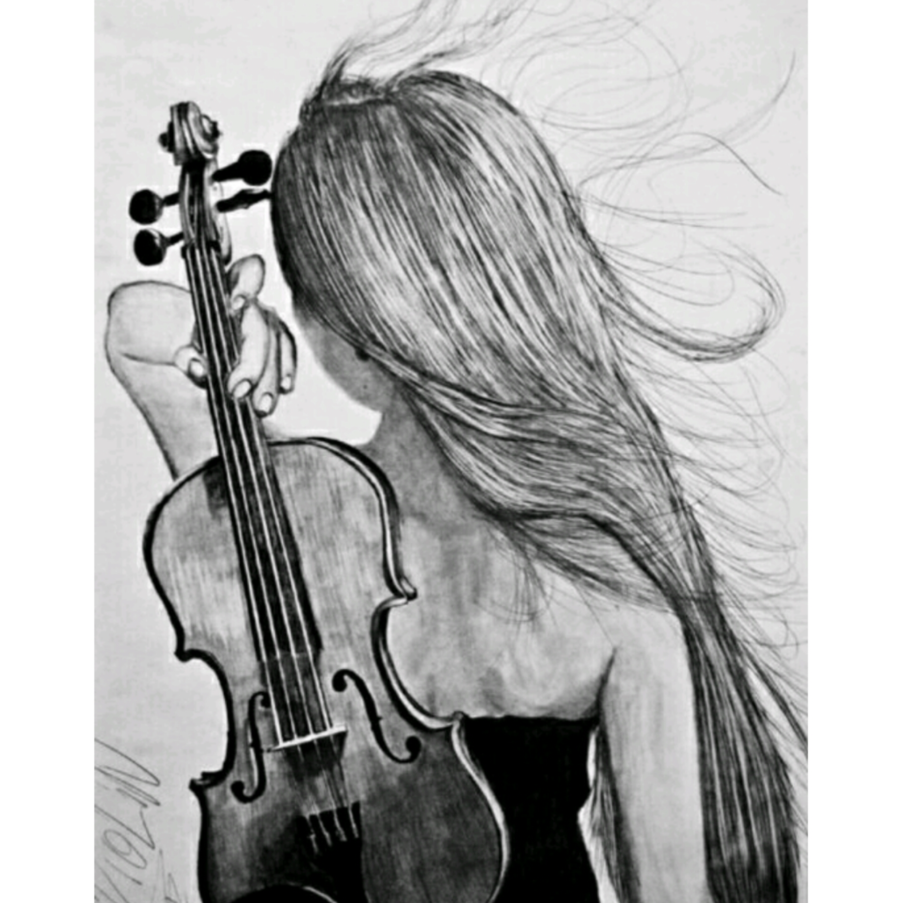

Growing up i was alaways among the best students in class and i my hard work payed off when when i cleared my kenya secondary school examination and i passed and joined a good univeristy. For my campus eduction i chose to study bsc in computer science from the interest i had developed ealier before i had joined campus.I did a couple of school projects and i also got to represent the university in challenges that were about tech.
Some of the events that i got to attend were events hosted
my microsoft, oracle and also safaricom. Here i learnt more about the windows plaform and also about
databases. Working as a group of four girls, we developed an android application called QUIT MOSQUITO and won
safaricom technovation challenge in 2014.
Growing up, I have always had an interest
in music. I can listen to any gener of music as long as the song has a message behind it and the beats
are supper cool. Often i work while listening to music escepially if in the afternoon since music just takes
me to another level of concetration and understanding There is always something about art that
always draws me to it. i can help but stare or just take a photo.
Good art alawys has some message behind it and you only get to understand it when you connect with the
artist. Generally am just an ambitious young lady. main goal in life being to be one of the best women in tech and work for a world class company
like microsoft. and this is why i joined Moringa school for it is the place to grow and become who you want to be.
INTERESTS
